A run-walk workout alternates short runs with deliberate walking instead of asking you to run continuously. Beginner programmes are built this way: the NHS Couch to 5K plan starts with a five-minute warm-up walk, then one minute of running and one minute thirty seconds of walking, repeated seven times. These 15 steps show how to plan one session of your own, judge the effort sensibly, and adjust it afterwards.
Part 1 of 3
Set Up the Session
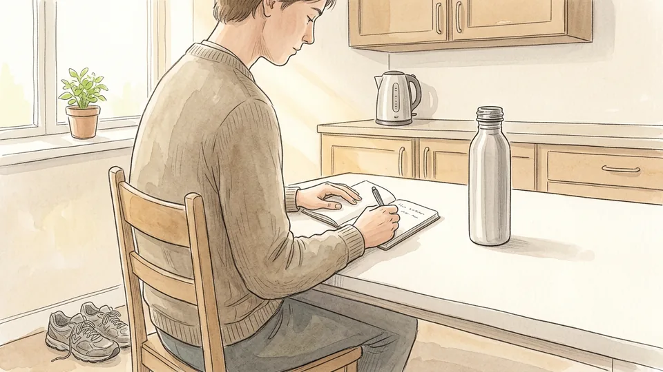
Step 1 of 15
Decide what this session is for
Name one purpose before you leave the house: getting moving again, practising a steady rhythm, or covering a familiar loop more comfortably. A run-walk workout is a complete session in its own right, not a lesser version of continuous running. Pick a purpose you can meet on an ordinary day rather than on your best day.
Tip: Write the purpose down. It makes it easier to judge the session afterwards.
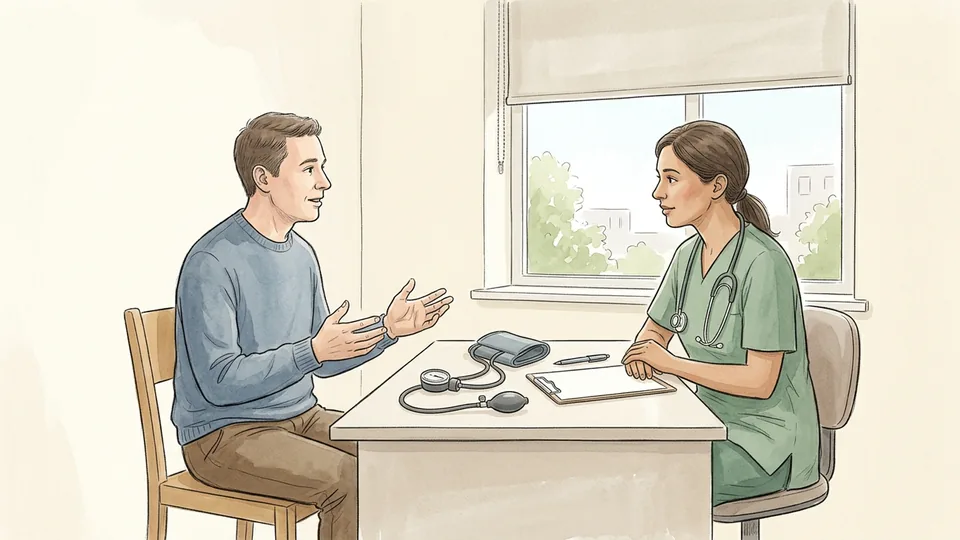
Step 2 of 15
Check whether to ask a clinician first
Ask a health professional about a suitable plan if you have a heart or lung condition, a recent injury, if you are pregnant, or if activity brings on symptoms. The NHS also advises speaking to a GP first if you are worried about your health before starting Couch to 5K. Follow individual medical advice over any general plan, including this one.
Tip: Bring a short description of the session you intend to do; it makes the advice more specific.
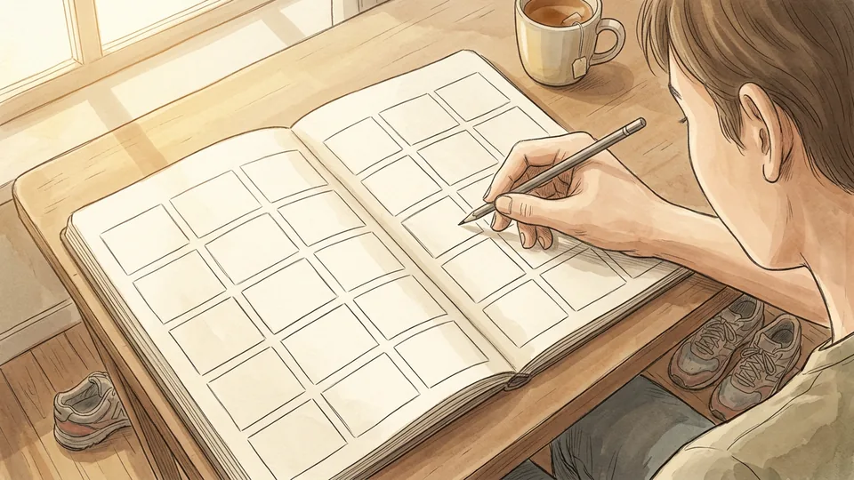
Step 3 of 15
Choose a realistic total session length
Decide how long the whole workout will take, including the warm-up and cool-down. Many beginner sessions sit near half an hour: the first Couch to 5K run totals about 28 minutes 30 seconds before stretching. Choose a length that fits your week rather than one that depends on everything going perfectly.
Tip: If the day is tight, shorten the session rather than skipping the warm-up and cool-down.
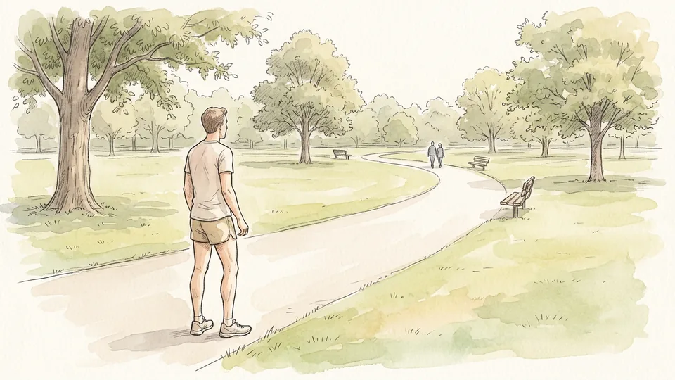
Step 4 of 15
Pick a simple, safe route
Choose a flat, familiar, well-maintained route where you can shorten the session easily, such as a park loop, a quiet path, or a track. Repeating a loop means you are never far from your start point. Check traffic, cyclists, footing, lighting, and the weather, and tell someone your route if you are going alone.
Tip: A short loop you repeat is easier to cut early than a long out-and-back route.
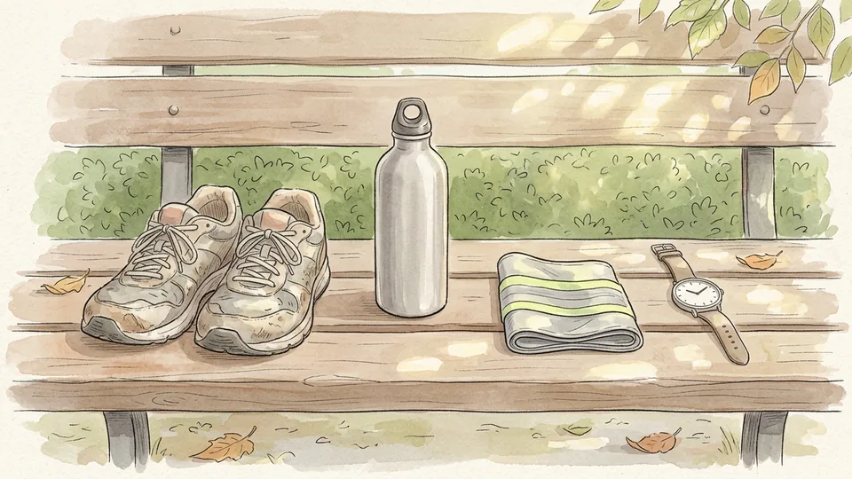
Step 5 of 15
Gather the few things you need
You need shoes that fit comfortably, clothes suited to the weather, and something to keep time. Take water, especially in warm weather or for longer sessions. Add reflective items and a light for low light, and carry any medication you have been advised to keep with you. Nothing here needs to be expensive.
Tip: Lay everything out the night before so a missing item does not become a reason to skip.
Part 2 of 3
Build the Intervals
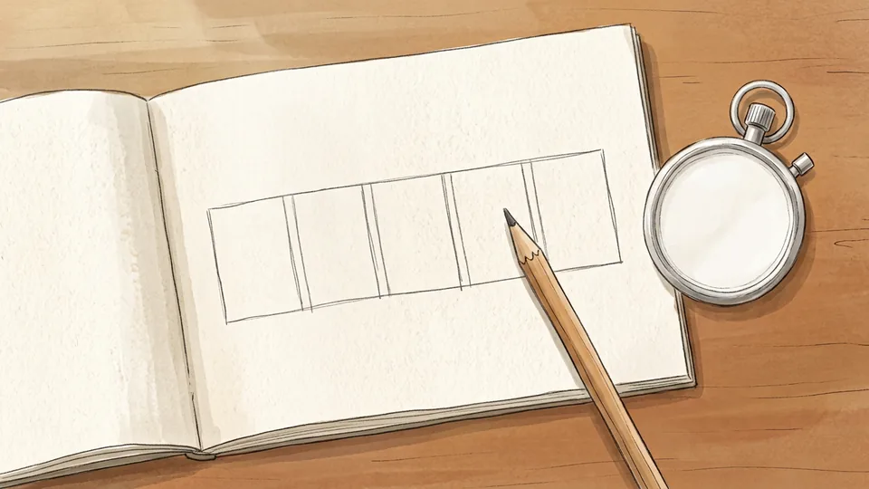
Step 6 of 15
Choose a starting run-walk ratio
Pick a ratio you could repeat several times without straining. One minute of easy running with one minute thirty seconds of walking, repeated seven times, is the first NHS Couch to 5K session. If that feels like too much, shorten the running interval or lengthen the walk. The ratio is a starting point, not a test.
Tip: If you cannot finish the last interval at an easy effort, the first one was too hard.
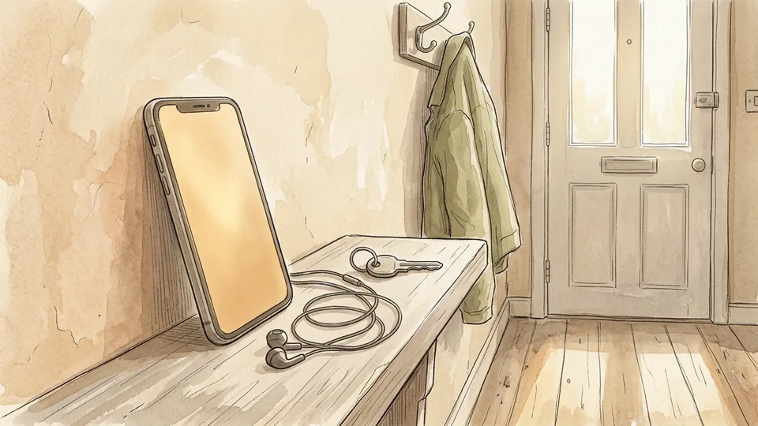
Step 7 of 15
Set a timing method you do not have to watch
Use a repeating timer, an audio-guided app, or landmarks such as lamp posts so you are not checking a screen constantly. Timing matters more than distance in a run-walk session, because it keeps both the running and the walking honest. The free NHS app times the intervals for you if you would rather not count.
Tip: Test the timer at home; an alert you cannot hear outdoors is worse than none.
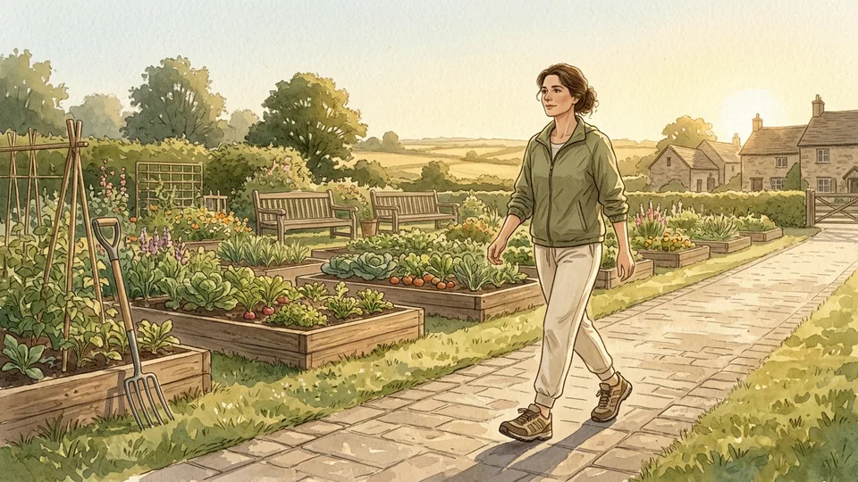
Step 8 of 15
Warm up with easy walking
Begin with about five minutes of easy walking, as the NHS plan does at the start of every run. The American Heart Association suggests warming up for five to ten minutes, doing your planned activity at a slower pace, and warming up longer for more intense sessions. A warm-up should leave you ready to move, not tired.
Tip: Keep the warm-up gentle enough that you could easily hold a conversation.
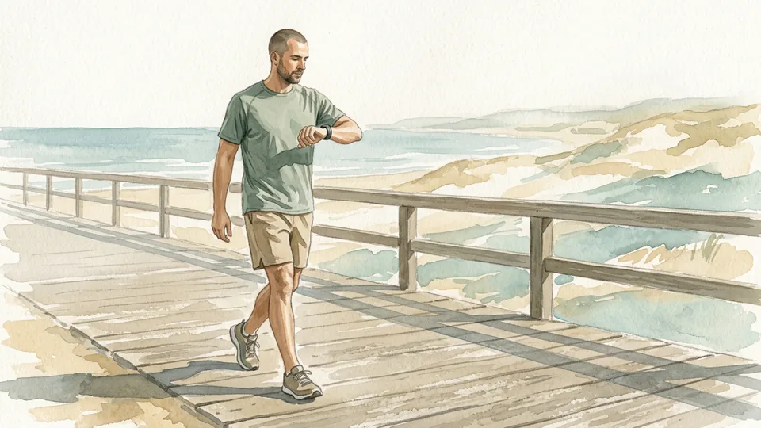
Step 9 of 15
Keep the walking recovery deliberate
Walk the recovery interval at a purposeful pace and let it run its full length. Cutting the walk short to 'save time' usually makes the next running interval harder and the whole session less repeatable. The walk is scheduled training, not a lapse, and beginner plans build it in on purpose.
Tip: Start the next run only when your breathing has settled, even if the timer is ready first.
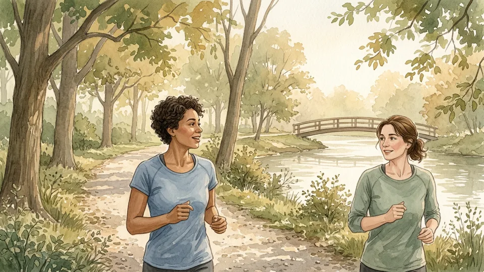
Step 10 of 15
Check the effort with the talk test
Run the intervals at an effort you can hold a conversation through. The CDC describes the talk test this way: during moderate-intensity activity you can talk but not sing, and during vigorous activity you cannot say more than a few words without pausing for breath. Slow down or walk if you cannot speak in phrases.
Tip: The same pace can be moderate for one person and vigorous for another; judge your own effort.
Part 3 of 3
Finish and Adjust
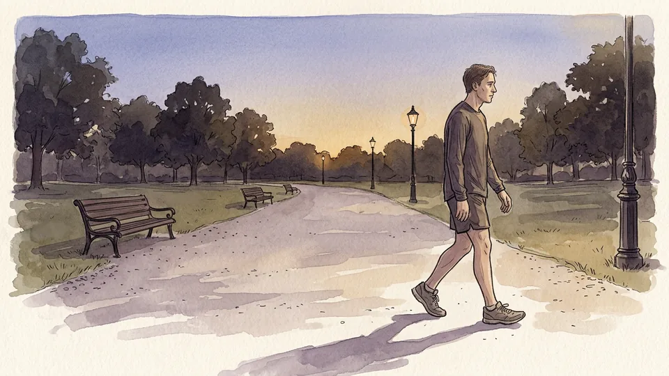
Step 11 of 15
Cool down instead of stopping suddenly
Finish with about five minutes of easy walking. The American Heart Association recommends reducing your walking speed for five to ten minutes so your heart rate comes down gradually, and notes that stopping abruptly can leave you light-headed because heart rate and blood pressure drop quickly.
Tip: Keep walking until your breathing is comfortable and you are no longer warming up.
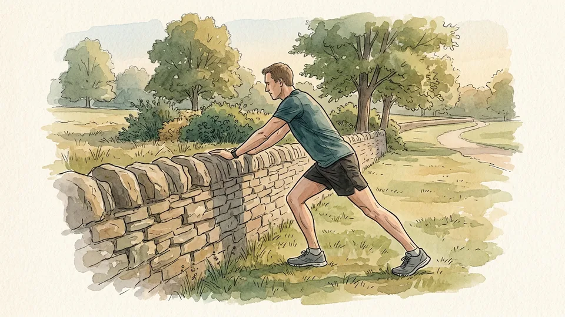
Step 12 of 15
Stretch gently while you are still warm
Stretching after the cool-down walk can help your muscles recover. The American Heart Association suggests holding each stretch for 10 to 30 seconds, keeping the stretch strong but not painful, breathing through it, and not bouncing. Stop any stretch that causes sharp pain rather than working through it.
Tip: Stretch both sides evenly, even when only one side feels tight.
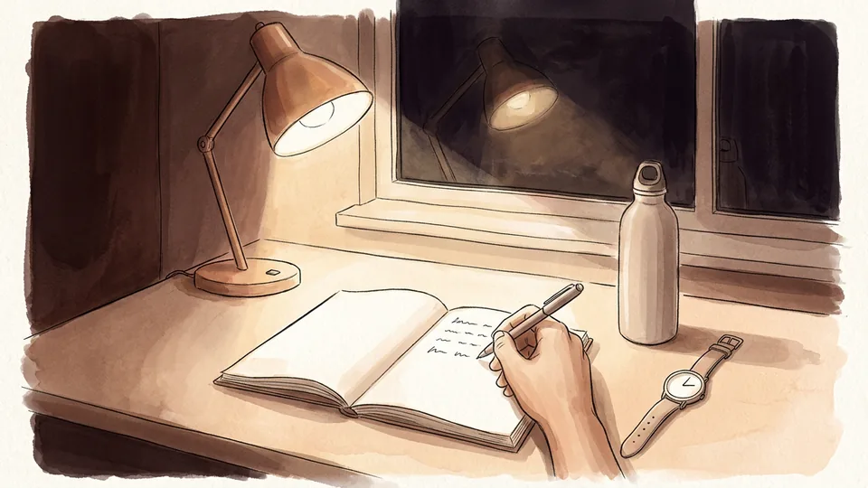
Step 13 of 15
Write down what actually happened
Record the intervals you completed, how the effort felt, and anything unusual such as a niggle, poor sleep, or a very warm day. A few lines are enough. Over several weeks the notes show whether sessions are becoming easier, which a single difficult day never tells you.
Tip: Note how you felt the next morning as well as during the session.
generate in next batch → images/raw/14-*.png
Step 14 of 15
Change one thing at a time
When a session feels manageable, make a single change: lengthen the running intervals slightly, add one interval, or reduce the walk a little. Do not lengthen the runs, cut the walks and add a session in the same week. The NHS plan progresses gradually across nine weeks, with three sessions a week and a rest day between runs.
Tip: Keep a change for a couple of sessions before deciding whether it worked.
generate in next batch → images/raw/15-*.png
Step 15 of 15
Respond to pain and unusual symptoms
Stop the session if you develop pain, dizziness, unusual breathlessness, or anything that feels wrong, and seek medical advice if it persists, worsens, or changes how you walk. Chest pain, fainting, or severe difficulty breathing need emergency help rather than another attempt at the intervals.
Tip: Repeat an easier session instead of trying to make up what you missed.
Tips
- Walking intervals are planned training, not a sign that the session failed.
- Time the intervals rather than chasing distance.
- Keep a shorter backup session for busy or difficult days.
- Judge progress over several weeks, not by one hard session.
Warnings
- Ask a health professional about a suitable plan if you have a heart or lung condition, a recent injury, symptoms during activity, or other concerns about exercising.
- Stop and call local emergency services for chest pain, fainting, or severe difficulty breathing; do not try to finish the session first.
- Stop if pain or unusual symptoms develop, and seek medical advice if they persist, worsen, or affect how you move.
- Avoid unsafe roads, ice, severe weather, and poor visibility. Reflective clothing and lights help but do not make a hazardous route safe.
Community Q&A
Is run-walk real training?+
Yes. Established beginner programmes are built from run-walk intervals; the NHS Couch to 5K plan alternates running and walking from its first session. The walking is scheduled recovery that lets you accumulate time on your feet at a manageable effort.
What run-walk ratio should a beginner start with?+
The first NHS Couch to 5K session uses one minute of running and one minute thirty seconds of walking, repeated seven times, between a five-minute warm-up walk and a five-minute cool-down walk. Shorten the run or lengthen the walk if that feels too hard.
How do I know if I am running too fast?+
Use the talk test. The CDC notes that during moderate-intensity activity you can talk but not sing, while during vigorous activity you cannot say more than a few words without pausing for breath. If you cannot speak in phrases, slow down or walk.
How long should the warm-up and cool-down be?+
The American Heart Association suggests warming up for five to ten minutes and reducing your walking speed for five to ten minutes afterwards. The NHS plan uses a five-minute walk at each end of every run.
How often should I do a run-walk workout?+
Three sessions a week with a rest day between runs is the pattern the NHS plan uses, but your own schedule, recovery and health matter more than a fixed number. Repeat a week when sessions still feel hard.
References
- National Health Service. Couch to 5K running plan. Accessed October 29, 2026. https://www.nhs.uk/better-health/get-active/get-running-with-couch-to-5k/couch-to-5k-running-plan/
- Centers for Disease Control and Prevention. How to Measure Physical Activity Intensity. Updated December 4, 2025. https://www.cdc.gov/physical-activity-basics/measuring/index.html
- American Heart Association. Warm Up, Cool Down. Last reviewed January 16, 2024. https://www.heart.org/en/healthy-living/exercise-and-physical-activity/fitness-basics/warm-up-cool-down
- National Health Service. Get Running with Couch to 5K. Accessed October 29, 2026. https://www.nhs.uk/better-health/get-active/get-running-with-couch-to-5k/